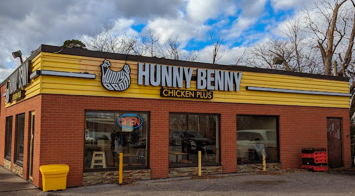

Our Story

Hunny Benny Chicken Plus is built on a passion for great food, local roots, and doing things the right way — fresh, made daily, and full of flavor. What started as two beloved neighborhood spots has come together under one name. Our Aurora location was originally known as Chuck’s Chicken, a local favorite that was rebranded to avoid confusion with Chuck’s Roadhouse, while our Newmarket location began as its sister concept, Little Brother’s Kitchen. Today, Hunny Benny brings those two stories together, continuing the same commitment to quality ingredients, bold flavors, and comfort food made with care.